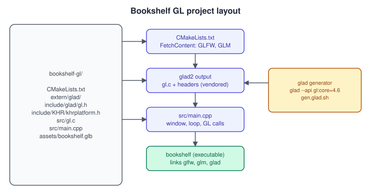
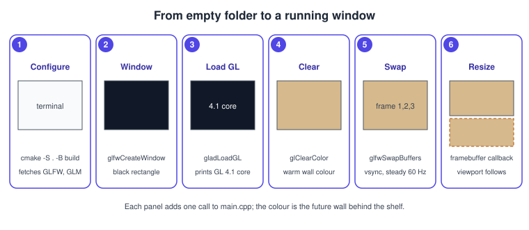
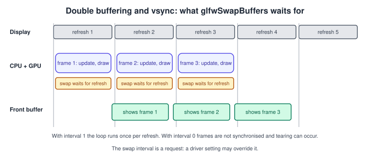

Getting Started on the Desktop
|
This content was generated with the assistance of AI and should be verified against the official documentation before being relied on in production. |
This page takes you from an empty folder to a window that opens an OpenGL core context, clears it to a colour and runs a stable render loop on Windows, Linux and macOS. Every later page of this section starts from this program. It uses four small libraries, each with one job: CMake builds the project, GLFW creates the window and the context and delivers input, glad2 loads the OpenGL function pointers, and GLM provides the vector and matrix types used from the transforms page onward.
The facts were checked in November 2026. The versions documented are OpenGL 4.6 with GLSL 4.60 as the optional newest path and a 4.1 core baseline for macOS, with GLFW 3.4 or later (the GLFW site lists 3.5.1, released 31 July 2026, as the latest version; GLFW supports Windows, macOS, Wayland and X11), glad2 and GLM 1.0.x. You need a C++20 compiler, CMake 3.24 or later and a GPU whose driver supports OpenGL 4.1 core. On Linux you also need the development packages that GLFW itself needs (X11 or Wayland headers; see the GLFW compile guide). The general ideas behind contexts and loaders are in Contexts, Windows and Loaders; the version terms in Versions, Profiles and Extensions. For CMake and package managers in general see C++ Build and Tooling and C Build and Tooling.
What each library does
| Library | Role |
|---|---|
GLFW |
Creates the window, the OpenGL (or ES) context and the swap chain; reports keyboard, mouse and window events; owns the event loop. SDL is an alternative with the same role and a larger scope (audio, game controllers). |
glad2 |
A generator that writes a C file and headers for exactly the OpenGL version, profile and extensions you pick. At start-up it asks the platform for the address of each function and fills in function pointers, which is necessary because the system library only exports the oldest functions (see the loaders page). |
GLM |
A header-only C++ mathematics library that mirrors GLSL types ( |
CMake |
Describes the executable and downloads or finds the libraries on every platform. |
The maths of what GLM computes is in Vectors, Matrices and Homogeneous Coordinates.
Project layout

The bookshelf asset used in later pages is the shared glTF file, bookshelf.glb; copy it into
assets/ when you reach the asset-loading page.
Step 1: generate the loader with glad2
glad2 is distributed as a Python package and as a web generator at https://gen.glad.sh/. With Python installed:
python3 -m pip install glad2
# OpenGL core, the newest version; the loader fills in only what the context supports.
glad --api gl:core=4.6 --out-path extern/glad cSource: glad generator
The command writes extern/glad/include/glad/gl.h, extern/glad/include/KHR/khrplatform.h and extern/glad/src/gl.c. Commit them: a
generated loader is part of your source tree and removes a build-time Python dependency. Generating 4.6 does not require a 4.6
GPU: the header declares every 4.6 function, but at run time gladLoadGL leaves the pointers of unsupported functions null and sets
GLAD_GL_VERSION_4_6 to 0. Your code must check the flag before calling such a function. The web generator offers the same choices:
language C/C++, specification OpenGL, API gl with profile Core, and extension selection. Add --extensions with a list to keep
the loader small if you only use a few.
Step 2: CMake
cmake_minimum_required(VERSION 3.24)
project(bookshelf_gl LANGUAGES C CXX)
set(CMAKE_CXX_STANDARD 20)
set(CMAKE_CXX_STANDARD_REQUIRED ON)
set(CMAKE_CXX_EXTENSIONS OFF)
include(FetchContent)
set(GLFW_BUILD_DOCS OFF CACHE BOOL "" FORCE)
set(GLFW_BUILD_TESTS OFF CACHE BOOL "" FORCE)
set(GLFW_BUILD_EXAMPLES OFF CACHE BOOL "" FORCE)
FetchContent_Declare(glfw
GIT_REPOSITORY https://github.com/glfw/glfw.git
GIT_TAG 3.4)
FetchContent_Declare(glm
GIT_REPOSITORY https://github.com/g-truc/glm.git
GIT_TAG 1.0.1)
FetchContent_MakeAvailable(glfw glm)
# glad2 output committed under extern/glad
add_library(glad STATIC extern/glad/src/gl.c)
target_include_directories(glad PUBLIC extern/glad/include)
target_link_libraries(glad PUBLIC ${CMAKE_DL_LIBS})
add_executable(bookshelf src/main.cpp)
target_link_libraries(bookshelf PRIVATE glfw glm::glm glad)
# We include glad ourselves, so GLFW must not include a system GL header.
target_compile_definitions(bookshelf PRIVATE GLFW_INCLUDE_NONE)
if(MSVC)
target_compile_options(bookshelf PRIVATE /W4)
else()
target_compile_options(bookshelf PRIVATE -Wall -Wextra)
endif()Source: GLFW: Building applications
Build and run:
cmake -S . -B build -DCMAKE_BUILD_TYPE=Release
cmake --build build --parallel
./build/bookshelfSource: GLFW: Building applications
If you use vcpkg or Conan, replace FetchContent with find_package(glfw3 CONFIG REQUIRED) and find_package(glm CONFIG
REQUIRED); the target_link_libraries line stays the same (glfw and glm::glm). The GLFW tag above is a release that
exists; use a newer tag if you want the latest version.
Step 3: the first program
The program has five parts: an error callback, window hints, a loader call, a render loop and clean shutdown. The structure is the same in every GLFW program.
Create src/main.cpp:
#include <glad/gl.h>
#include <GLFW/glfw3.h>
#include <cstdio>
#include <cstdlib>
namespace {
constexpr int kInitialWidth = 1280;
constexpr int kInitialHeight = 720;
void on_glfw_error(int code, const char* description) {
std::fprintf(stderr, "GLFW error %d: %s\n", code, description);
}
// Debug output needs GL 4.3 or KHR_debug; macOS stops at 4.1, so this is optional.
void GLAD_API_PTR on_gl_debug(GLenum source, GLenum type, GLuint id, GLenum severity,
GLsizei /*length*/, const GLchar* message,
const void* /*user*/) {
if (severity == GL_DEBUG_SEVERITY_NOTIFICATION) return;
std::fprintf(stderr, "GL debug [src 0x%x type 0x%x id %u sev 0x%x]: %s\n",
source, type, id, severity, message);
}
void on_framebuffer_size(GLFWwindow*, int width, int height) {
// Pixels, not screen coordinates: on a high-DPI display they differ.
glViewport(0, 0, width, height);
}
void on_key(GLFWwindow* window, int key, int /*scancode*/, int action, int /*mods*/) {
if (key == GLFW_KEY_ESCAPE && action == GLFW_PRESS) {
glfwSetWindowShouldClose(window, GLFW_TRUE);
}
}
} // namespace
int main() {
glfwSetErrorCallback(on_glfw_error); // may be set before glfwInit
if (!glfwInit()) return EXIT_FAILURE;
// Baseline: 4.1 core, forward compatible (required on macOS, harmless elsewhere).
glfwWindowHint(GLFW_CLIENT_API, GLFW_OPENGL_API);
glfwWindowHint(GLFW_CONTEXT_VERSION_MAJOR, 4);
glfwWindowHint(GLFW_CONTEXT_VERSION_MINOR, 1);
glfwWindowHint(GLFW_OPENGL_PROFILE, GLFW_OPENGL_CORE_PROFILE);
glfwWindowHint(GLFW_OPENGL_FORWARD_COMPAT, GLFW_TRUE);
#ifndef NDEBUG
glfwWindowHint(GLFW_OPENGL_DEBUG_CONTEXT, GLFW_TRUE); // ignored where unsupported
#endif
GLFWwindow* window = glfwCreateWindow(kInitialWidth, kInitialHeight, "Bookshelf GL", nullptr, nullptr);
if (!window) {
glfwTerminate();
return EXIT_FAILURE;
}
glfwMakeContextCurrent(window);
const int version = gladLoadGL(glfwGetProcAddress);
if (version == 0) {
std::fputs("Failed to load OpenGL function pointers\n", stderr);
glfwTerminate();
return EXIT_FAILURE;
}
std::printf("OpenGL %d.%d, renderer: %s\n", GLAD_VERSION_MAJOR(version),
GLAD_VERSION_MINOR(version), glGetString(GL_RENDERER));
if (GLAD_GL_VERSION_4_3) {
GLint flags = 0;
glGetIntegerv(GL_CONTEXT_FLAGS, &flags);
if (flags & GL_CONTEXT_FLAG_DEBUG_BIT) {
glEnable(GL_DEBUG_OUTPUT);
glEnable(GL_DEBUG_OUTPUT_SYNCHRONOUS); // breakpoint in the callback = the offending call
glDebugMessageCallback(on_gl_debug, nullptr);
}
}
glfwSwapInterval(1); // wait for one vertical blank per swap
glfwSetFramebufferSizeCallback(window, on_framebuffer_size);
glfwSetKeyCallback(window, on_key);
int fb_width = 0, fb_height = 0;
glfwGetFramebufferSize(window, &fb_width, &fb_height);
glViewport(0, 0, fb_width, fb_height);
double last_report = glfwGetTime();
int frames = 0;
while (!glfwWindowShouldClose(window)) {
glfwPollEvents();
glClearColor(0.84f, 0.72f, 0.55f, 1.0f); // the wall behind the Bookshelf
glClear(GL_COLOR_BUFFER_BIT);
glfwSwapBuffers(window);
++frames;
const double now = glfwGetTime();
if (now - last_report >= 1.0) {
char title[64];
std::snprintf(title, sizeof title, "Bookshelf GL - %d fps", frames);
glfwSetWindowTitle(window, title);
frames = 0;
last_report = now;
}
}
glfwDestroyWindow(window);
glfwTerminate();
return EXIT_SUCCESS;
}Source: GLFW: Getting started and OpenGL 4 reference: glClear

The numbered steps in the storyboard correspond to the program: panel 1 is the CMake configure, 2 is glfwCreateWindow,
3 is gladLoadGL, 4 is glClearColor and glClear, 5 is glfwSwapBuffers with the swap interval and 6 is the
framebuffer-size callback.
The hints in detail
| Hint | Effect |
|---|---|
|
|
|
The minimum version wanted. Creation fails if the driver cannot supply it. |
|
|
|
Removes deprecated features. Required on macOS; optional elsewhere. |
|
Requests a debug context so that |
|
|
|
Multisample count of the default framebuffer; see the anti-aliasing page. |
|
Requests an sRGB default framebuffer (see Color Spaces, HDR and Tone Mapping). |
|
False creates a hidden window; used for an off-screen context (tests, asset baking). |
All hints persist until reset with glfwDefaultWindowHints, so set them before every window you create. To use 4.6 features
when available, request 4.1 as above and test GLAD_GL_VERSION_4_6 afterwards; the driver returns the highest core version it
has for a core profile on Windows and Linux, and exactly the 4.1 core on macOS. If you want to insist on a 4.6 context, request
it and fall back with a second glfwCreateWindow call on failure.
The render loop
A frame has four jobs, in this order:
-
Poll events.
glfwPollEventsprocesses input and window events and calls your callbacks.glfwWaitEventsblocks until an event arrives and suits tools that redraw only when something changes; a game polls. -
Update state. Move things by the time since the last frame (see Game Loop and Frame Timing); never by a fixed amount per frame.
-
Render. Clear, bind state and draw.
-
Swap.
glfwSwapBufferspresents the back buffer.
The default framebuffer is double buffered: you draw into the back buffer while the display shows the front buffer. The swap exchanges them. With a swap interval of 1 the call waits for the next vertical blank, which locks the frame rate to the refresh rate and avoids tearing.

Notes on vsync:
-
glfwSwapInterval(0)disables the wait; frame rates are then limited only by the hardware and tearing may be visible. It is a request; the driver or the compositor may override it. -
Values above 1 skip refreshes (2 means every second refresh). A negative value requests adaptive sync where the platform supports it (
GLX_EXT_swap_control_tearorWGL_EXT_swap_control_tear). -
glfwSwapIntervalapplies to the current context, so call it afterglfwMakeContextCurrent. -
A loop that does not wait (interval 0 or minimised window) burns a CPU core; cap it or sleep.
Errors and the debug callback
OpenGL reports errors in two ways. The old way is glGetError, which returns one flag from a queue and must be polled after
each call; it tells you something went wrong but rarely where. The modern way is the debug callback of KHR_debug (core since
4.3), used above: the driver calls your function with a message that usually names the call and the reason. Making the
output synchronous means the callback runs inside the offending call, so a debugger breakpoint in the callback shows the
exact line. On macOS (4.1) none of this exists; use glGetError after suspicious calls or a capture tool. The details are in
Debugging and Tools.
GLFW has its own error callback (glfwSetErrorCallback), independent of OpenGL, which reports why creating a window or a
context failed (for example that the requested version is unavailable); set it before glfwInit, as above, otherwise you will see only
a null window.
High-DPI displays and resizing
-
Window size is in screen coordinates and framebuffer size is in pixels. On a Retina display they differ by a factor of 2 (GLFW creates a high-resolution framebuffer on macOS by default).
glViewportand anything that depends on resolution uses the framebuffer size, so useglfwGetFramebufferSizeand the framebuffer callback, notglfwGetWindowSize. -
On resize the viewport must be updated, as the callback does. The aspect ratio of the projection (see Cameras and Projection) must be updated too.
-
A minimised window has a framebuffer of size zero; skip rendering to avoid division by zero in the aspect ratio.
Common mistakes
-
Including GLFW’s
glfw3.hbefore the glad header withoutGLFW_INCLUDE_NONE. GLFW then includes a system GL header and the declarations clash. The CMake file defines it for the target. -
Calling any GL function before
gladLoadGL, or on a thread without a current context. A context is current on one thread at a time; see the contexts page. -
Not checking the result of
glfwCreateWindow, which returns null when the requested version is unavailable. -
Forgetting
GLFW_OPENGL_FORWARD_COMPATon macOS; the result is a 2.1 legacy context or a failure. -
Keeping GL objects in globals or static wrappers that outlive the window: destroy GL objects before the context is destroyed with
glfwDestroyWindow. -
Installing GLFW from an old package manager release. Wayland and recent platform fixes are in recent versions.
Performance notes
At this stage there is little to tune, but two habits matter later: keep vsync on while developing (it prevents measuring a meaningless 3000 fps of empty frames) and read the frame time in milliseconds rather than fps, because 60 fps and 58 fps differ by less than 0.6 ms while 30 fps and 28 fps differ by 2.4 ms. The topic grows in Performance and Profiling and OpenGL Performance.
Where older books and tutorials are out of date
| Older material says | What is current |
|---|---|
Create the window with GLUT ( |
GLUT is unmaintained; use GLFW or SDL, a generated loader and a core context. The context hints replace |
Link against |
Only GL 1.1 is exported by the Windows system library; use a loader (glad2) so that every function of the context is available. |
Projects are built with Visual C++ 6.0 projects or hand-written makefiles |
Use CMake, which generates Visual Studio, Ninja or Xcode projects from one description. |
Mac OS X examples use AGL or |
GLFW creates the context for you; macOS provides a 4.1 core profile at most and OpenGL is deprecated there since 10.14. |
The context "just exists" after |
You request the version and profile, check the result and read the version back. |